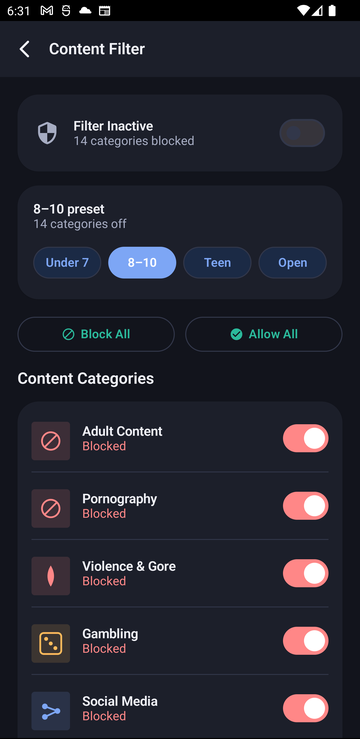

Age presets set every content category at once, or fine-tune any of 15 individually — adult content, gambling, violence, social media, and more. Filtering runs as a local, on-device VPN: nothing ever leaves the phone or reaches a Paxio server.
Age presets set every content category at once, or fine-tune any of 15 individually — adult content, gambling, violence, social media, and more. Filtering runs as a local, on-device VPN: nothing ever leaves the phone or reaches a Paxio server.

Start simple, then adjust as needed.
It's DNS-based, not a content scanner.
A visit is stopped before the page loads.
From Control, tap Content Filter.
Choose an age preset, then adjust any of the 15 categories individually.
The on-device VPN applies the new rules right away.
No — filtering works by inspecting DNS requests against a blocklist entirely on the device. No browsing content or history is ever transmitted to or stored on a Paxio server.
15 categories total, including adult content, gambling, violence, and social networks — each can be toggled individually, or set all at once with an age preset.
The on-device VPN only inspects DNS lookups, not full traffic, so the performance impact is minimal.
It applies device-wide at the DNS level, so it covers browsers and any app that makes web requests, not just one browser.